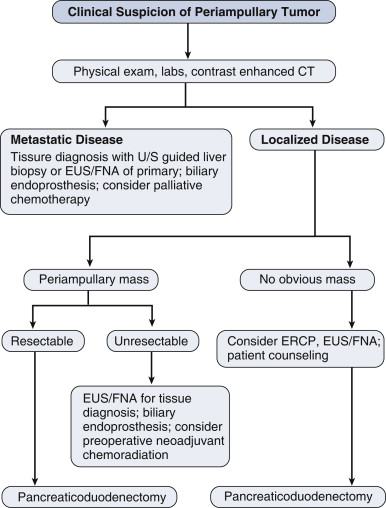
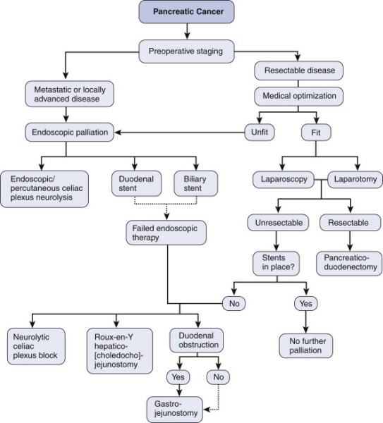

Pancreatic Cancer
DEFINITION
Cancer of the pancreas.
Pathophysiology of periampullary cancers in general also discussed.
D E A B M I M
EPIDEMIOLOGY
Survival has not significantly improved for 50 years.
- almost all patients will die within a year of diagnosis.
100 per million.
Incidence probably increasing
Risk Factors
Males
Old age (usually 70s+)
Cigarette smoking.
Chronic pancreatitis (4% only)
Obesity
Other risk factors are not clearly established, including
alcohol, diabetes and asbestos.
Genetic
5-10% have a familial form, associated with mutations in BRCA-2
- or PRSS1 (hereditary pancreatitis), p16 or HNPCC
syndromes.
D E A B M I M
AETIOLOGY
Mainly AdenoCa
Originate from ductular linings, usually in HOP
Cancer Genetics
Alternations common in ras oncogene family and p53 tumor suppressor
gene
Tissue factors associated with growth include epidermal growth
factor (EGF) and tumour growth factor-alpha (TGF-a)
Growth also stimulated by cholecystokinin, secretin, estradiol,
progesterone and testosterone.
Other Types and Cystic tumours
Are rare but important to identify because they have a much
better prognosis.
Discussed here
D E A B M I M
BIOLOGICAL BEHAVIOUR
Pathophysiology
Usually presents late, contributing to poor prognosis.
Due to vascularity of pancreas and tumor biology, metastatic spread
occurs early in the disease
Mets usually go to draining lymph nodes (celiac axis)
- and may involve sensory nerves in this area, causing substantial
pain.
Cancers of body and tail tend to be advanced at presentation and are
often unresectable.
Periampullary Cancers
AdenoCa originating in the region of the ampulla
Intraduodenal components, bile duct, pancreatic duct and common
channel.
Lower malignant propensity vs tumours of head and body of pancreas,
and better prognosis after resection.
- because diagnosis tends to be made earlier due to early presence
of jaundice
85% are pancreatic ductal adenoCa (and these are worst outcome).
- rest 15% are either adenoCa of ampulla, duodenal adenoCa or
cholangioCa
--> adenoCa of ampullar of Vater is uncommon; often waxing and
waning obstructions, less aggressive and comparatively good outcome
(35-55% 5-yr survival); benign tumours here should be resected
--> Duodenal Ca is rare, may arise from duodenal polyps, more
favourable profile, with best 5-y survival (30-60%).
- rarely others, e.g. neuroendocrine tumours, cystadenoCa, acinar
cell or SCC, GIST, sarcoma, lymphoma, mets.
--> despite histological differences, share presentation, pre-op
assessment and treatment, so can consider with panc ca here.
--> commonly resect then get specific diagnosis later.
Prognosis
Overall, <5% 5-year survival.
D E A B M I M
MANIFESTATIONS
Painless jaundice often first sign, particularly if ampullary or
HOP.
- may have pale tools.
Epigastric and mid back pain from local spread.
Non-specific fullness, nausea, malaise, night sweats.
Exocrine fx
Maldigestion and steatorrhoea
Endocrine fx
Uncommon presentation but can happen as new diagnosis of adult-onset
diabetes.
Metastatic features may dominate early
- weight loss, loss of appetite, fatigue,
- metastatic features by site.
More severe pain that responds poorly to analgesics can signal
autonomic plexus invasion.
Courvoisier's Law
Palpable gallbladder in a patient with painless obstructive
jaundice suggests malignancy
Examination
Check for jaundice and effects
Features of met spread; hepatomegaly, enlarged nodes in
subclavicular chain, Sister-Mary Joseph nodes, Ascites (not common)
D E A B M I M
INVESTIGATIONS
Early investigations often focused on duct obstructions
Bloods
CBC, coags, LFTs, U&Es
- conjugated hyperbilirubinaemia
Tumour Markers
Ca19-9 level may correlate directly with tumour mass; if
>1000 = bad sign.
Low sensitivity for small tumours (80%)
- 1:5 pts will have normal levels when diagnosed with pancreatic
primary.
Also has low specificity (60-70%)
- also elevated in benign biliary obstruction; cholangitis,
strictures, and other malignancies (colon, ovary, stomach).
Main value is to assess treatment response and recurrence.
Imaging
Determine patients with resectable disease
- excluding those with mesenteric vascular involvement, distant mets
US often first test during work up
- may show duct dilation and +/- mass in pancreas
- note that with periampullary tumours, may see the duct dilation
but not the mass.
ERCP
ERCP can serve both a diagnostic and therapeutic function in
patients presenting with jaundice.
- double-duct is particularly suggestive of ampullary malignancy.
Brushings; digitized image analysis of cell nuclei (DIA) and FISH
have increased sensitivity vs standard cytological assessment.
See below for ERCP role
CT
Thin slice, contrast enhanced focused pancreatic protocol (75%
predictive of resectability).
--> ie. 2-3mm collimation, IV contrast, and separate scans for
arterial and venous phases.
- Tumor abutment of celiac trunk or SMA = unresectable, especially
if >1/2 encased
- Venous resections justified when SMV and/or tributaries involved
(unless both involved), and done in some centres; see below.
- Distant disease obviously --> unresectable; lesions as small as
1cm can be detected.
--> i.e. unsuspected mets still detected at laparotomy 20-30% of
the time.
MRI
Increasingly used but should choose MRI or CT not both.
Similar quality as CT but better imaging of ducts via MRCP
Safer in patients with renal dysfunction; or iodine allergy.
EUS
Images periampullary tumours in real-time, determine relationship vs
visceral vessels
Allows FNA (80% sensitivity; vs only 30-50% from ERCP brushings in
peri-ampullary tumours).
- can confirm unresectable locally advanced disease.
Highly operator dependent.
PET-CT
Role is still being defined; most useful for ruling out distant
mets in patients with suspect but uncertain lesions.
Peri-ampullary algorithm

Staging
T-stage
Tis = in situ (including PanInIII)
T1 = limited to pancreas; <=2cm
T2 = limited to pancreas but >2cm
T3 = Extends beyond pancreas but not involving celiac or SMA
T4 = involves celiac and SMA (unresectable
N-stage
Either 0 or 1 (any nodes)
M-stage
Either 0 or 1 (present)
Staging
I = T1 (A) or T2 (B) N0M0
II = T3N0M0 (A) or T1/2/3N1 (B)
III = T4 and any N
IV = anything with M1
D E A B M I M
MANAGEMENT
Principles
Often complex; multidisciplinary care.
Role of Preoperative Stenting and Biopsy
Stenting not necessary in fit patients who undergo stenting in a
timely fashion.
- increases rates of wound infection, difficulty of resection and
length of stay
- if BiliR>200 then probably safe
Surgical Resection
Only potentially curative option
Best results with small tumours (<3cm); but not a criteria for
unresectability.
- particularly ampullary
Pancreaticoduodenectomy = operation of choice
Unresectable if:
- metastatic disease
- involvement of celiac or SMA
- lymph nodes involved outside area normally included in resection
specimen (ie. paraaortic or coeliac)
Whipple's Procedure
1. Supine, midline or rooftop; dvt and ab prophylaxis
2. Explore abdomen for metastatic disease
3. Cholecystectomy
4. Kocher's maneuver
5. Mobilize pancreatic head, determine relationship of mass to SMA
and SMV for resectability.
- pre-op CT is highly accurate though, so should be well understood
pre-op what is going on.
6. Dissect within hepatoduodenal ligament, isolating CHD / CBD
7. Ligate GDA (check adequate flow through hepatic artery first to
ensure not diminished).
8. Expose portal vein at superior part of pancreatic neck (lies
behind GDA)
9. Divide duodenum with stapler 2-3cm distal to pylorus (pylorus
preservation favoured in 85%; unless tumour encroaching then go with
traditional distal gastrectomy approach).
10. Ligate R gastroepiploic artery and vein; exposes inferior
pancreatic neck over SMV.
11. Dissect to identify SMV and then create the critical tunnel
under the pancreas over the SMV until reaches / turns into portal
vein (=line of stapling).
12. Place 4 stay sutures to control intrapancreatic arteries and
retract, then transect the neck using cautery over the SMV-PV
13. Identify the pancreatic duct, lies in posterior-superior
location in pancreatic neck remnant.
14. Ligament of Treitz exposed and lysed at base of transverse
mesocolon.
15. Divide distal jejunum 15cm distal and separate from mesentery,
pass posterior to SM vessels
16. Retroperitoneal soft tissue margin of specimen and uncinate are
dissected along lateral SMA border
17. Remove specimen and mark if necessary.
18. Reconstruct; pancreaticojejunostomy (invaginated),
hepaticojejunostomy (e.g. 5-0 pds), duodenojejunostomy (downstream
15cm from hepaticoj.)
Post-op Care
Accelerated pathway;
D1 : NG out, oral ice chips, low IV fluids, and mobilise.
D2 : Clear fluids, Foley removed, diuresis with frusemide.
D3+ : drains removed on d3-6, depending on output; discharge usually
by d6-8 when pain free and mobilizing and eating.
Outcomes
Mortality is 1-3%.
Should be carried out in institutions doing 20+ per year.
But morbidity 30-40%, with most common problems being leak, delayed
emptying, abscesses, wound infections, UTIs and arrhythmias
Leak:
- lower with invaginated anastomoses
- preoperative diabetes is protective
- soft gland texture and high gland fat content associated with
higher leak rates
Vascular
Reconstruction During Whipples?
Specialist territory.
Justified by tumour biology argument.
Encasement of veins does not preclude resection because it is not a
marker of tumour biology; tumour has access to systemic circulation
long before then.
With successful resection, these patients have same chance of cure
as other stage-matched patients.
Adjuvant Therapy
Yes.
Improves both median and long-term survival.
Gemcitabine and 5-FU now treatment of choice
No benefit to chemoradiotherapy; radiotherapy not much used outside
US.
Other cytotixic agents under investigation including capectabine,
cisplatin, or targeted therapies (e.g. matrix
metalloproteinase inhibitors, VEGF inhibitors)
- limited potential to date, except EGFR inhibitor.
Newest trials are using more specific targeted pathways and will
emerge in coming years under personalized treatment models; are
focused on signalling pathways.
Neoadjuvant therapy?
Uncertain evidence due to inherently problematic trial design,
ie. we us. don't know pathology until it is out.
- so unclear if this is justified; may be giving chemo for
borderline lesions which is inappropriate.
Also may worsen obstructions, so benefit is outweighed by problems
under current understanding, so is not done.
Currently an active area of trials.
Prognosis
Depends on:
- site, size and grade of tumour
- lymph node status (most potent predictor if +ve = very bad)
- margins
Death correlates with index of positive nodes / total nodes examined
Pts with tumours <3cm with differentiated tumours, no nodes ahve
best survival (median 4y; 5y >40%).
Palliation
Relevant to the vast majority of pts; then life expectancy is
10m
Do least invasive procedure to achieve drainage of the bile duct and
relieve obstruction.
ERCP; PCT
- biliary endoprostheses
--> considering balance of metal vs plastic factors; metal stents
should be used if pts expected to survive >4-6m (fewer
hospitalizations, procedures and great patency longevity)
Surgical bypass only when intraoperative diagnosis of non-resectable
tumour and impending obstruction
- these patients are often the 'better' ones, so longer survival,
and surgical bypass provides better palliation in the longer-term.
--> two layered, hand sewn side-side retrocolic isoperistaltic
gastrojejunostomy for duodenal obstruction; reduces late GOO
--> single-layer end-to-side Roux-en-Y hepaticojejunostomy for
biliary bypass; cholecystojejunostomy (gallbladder bypass)
associated with higher rate of recurrent obstruction due to cystic
duct ingrowth)
May also need duodenal stenting.
- similar to biliary stents, should prefer metal (prevent tumour
ingrowth though may migrate more)
Most patients will develop substantial pain
- should be controllable.
- can manage at time of surgery when unresectable disease found:
--> celiac plexus neurolysis (nerve block); 20mL 50% ethanol on
either side of aorta, at level of celiac axis in area of celiac
plexus.
- alternatively performed percutaneously or transgastrically at a
later stage.
- favored over opiate use in this context by meta-analysis.
No evidence to justify palliative Whipples' procedures.
- but occasionally splenectomy justified in pts with low platelet
counts after venous obstruction.
Palliative chemorad?
Clear survival benefit for chemo alone; no role for
radiotherapy.
5-FU based approach
Algorithm

D E A B M I M
REFERENCES
Cameron
Tjandra